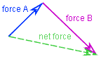
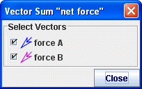

Vsota
vektorjev

Sled vsota vektorjev tpredstavlja vektorsko vsoto zbirke vektorskih sledi. Njeni koraki niso označeni, pač pa jih določajo komponente vektorjev v vsoti.
Vsota vektorjev je risana črtkano,da jo lahko razlikujemo od sledi vektorjev in vektorjev gibanja.Več informacij najdemo v poglavjih vektor in Točkovna masa.
Opomba: dodajanje vektorjev v vsoto vektorjev ni isto kot povezovanje vektorjev s konico na repl. Povezujemo lahko katerekoli vektorje, vključno z vektorji, ki predstavljajo različne korake iste sledi. Dodajanje vektorjev v vsoto vektorjev pa zahteva dve ali več ločenih vektorskih sledi. Sled vsota vektorjev je predstavljena v vsakem koraku kot vektor, ki je vsota vektorskih sledi v danem koraku, za grafično ponazoritev sta povezana vektorja sile A in sile B tako, da določata vektor sile rezultante. Ta rezultanta bi bila enaka tudi, če bi oba vektorja sile povlekli narazen, če le ne spreminjamo njunih komponent.
1. Dodajanje vektorjev v vsoto vektorjev

Z
odkljukanjem v pogovornem oknu izberemo vektorje, ki naj bodo vključeni
v vsoto vektorjev. Pogovorno okno se
prikaže, ko tvorimo vsoto vektorjev, ali pa z izbiro Izberi
vektorje v menuju sledi
vsote vektorjev.